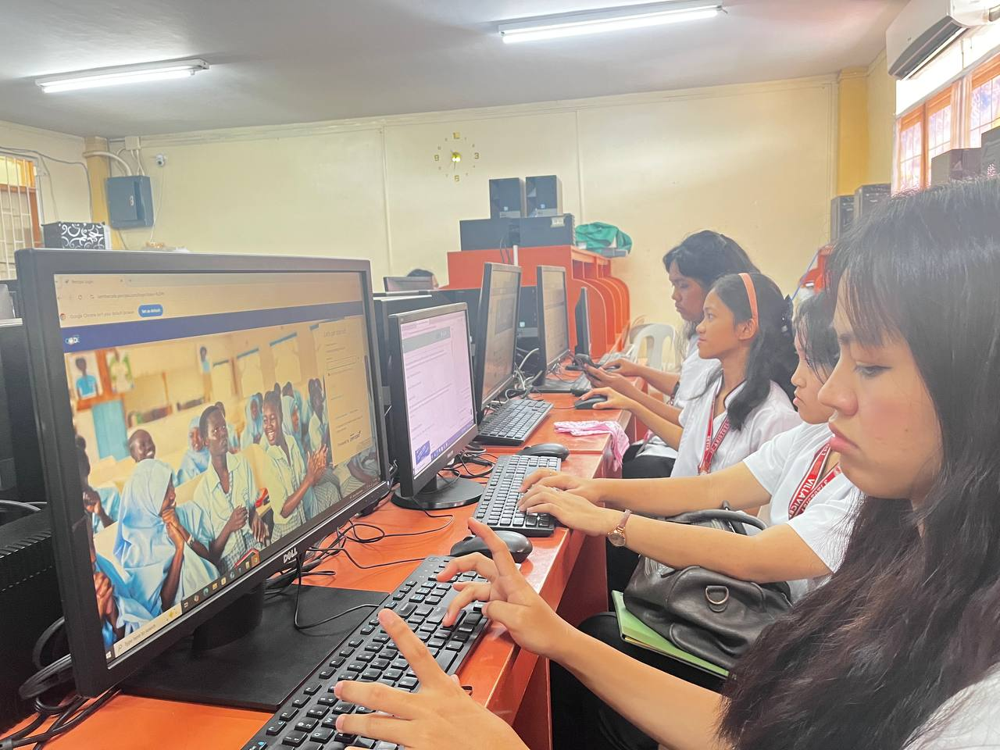
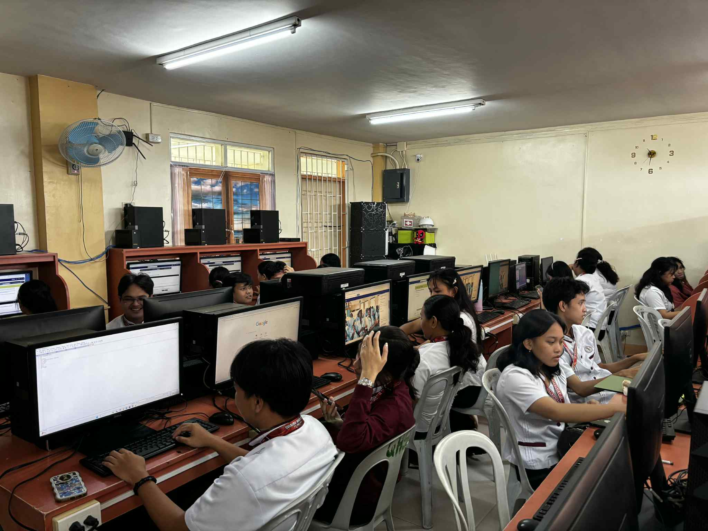
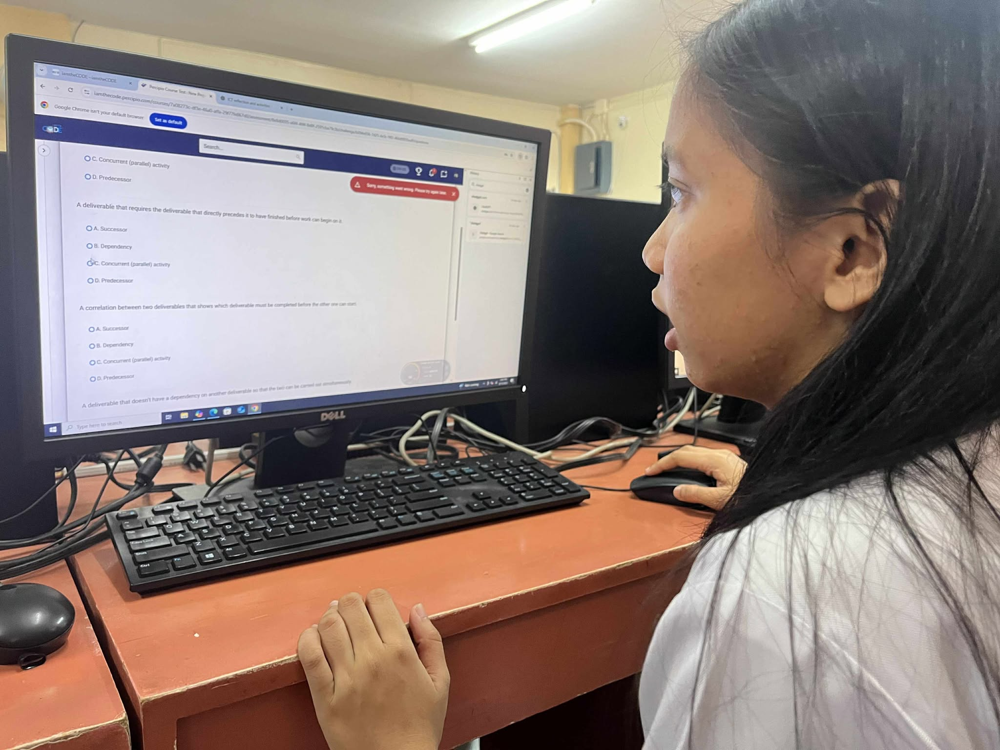
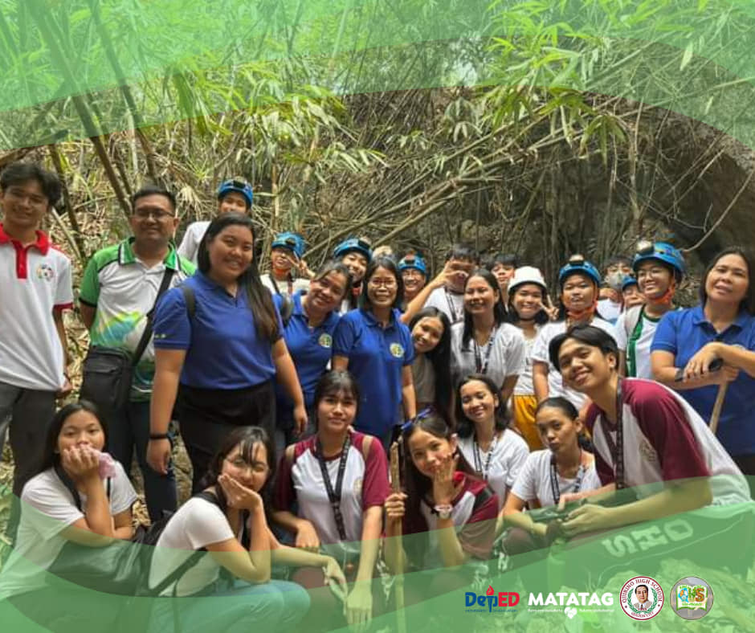
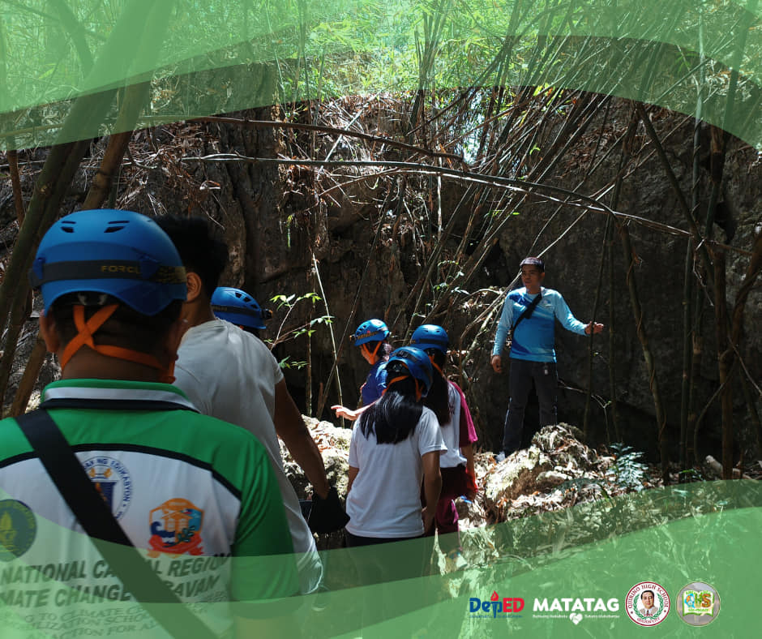
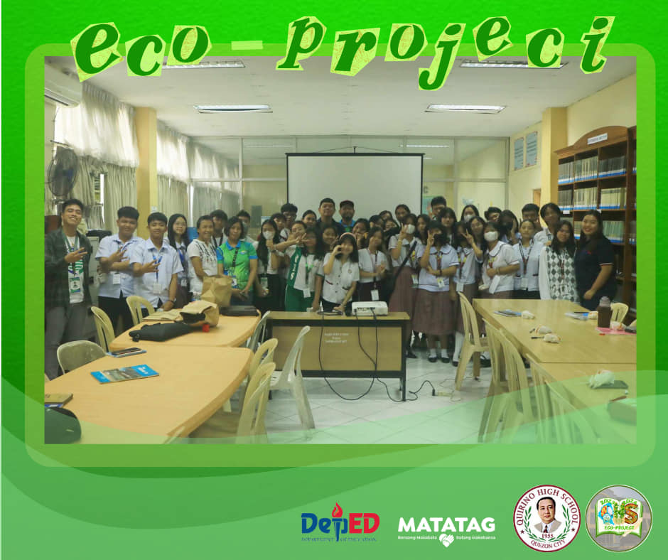
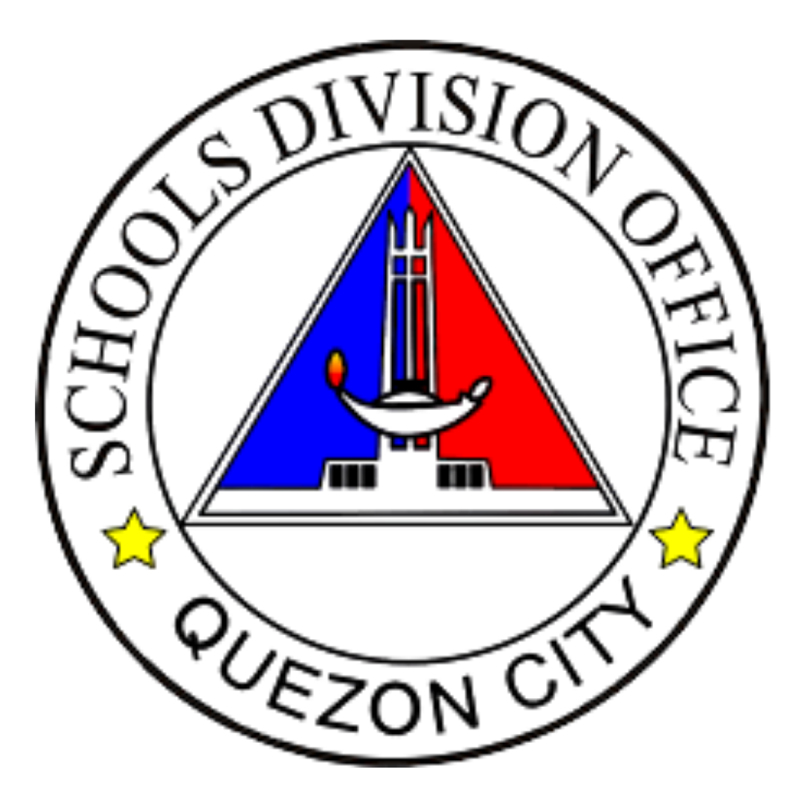
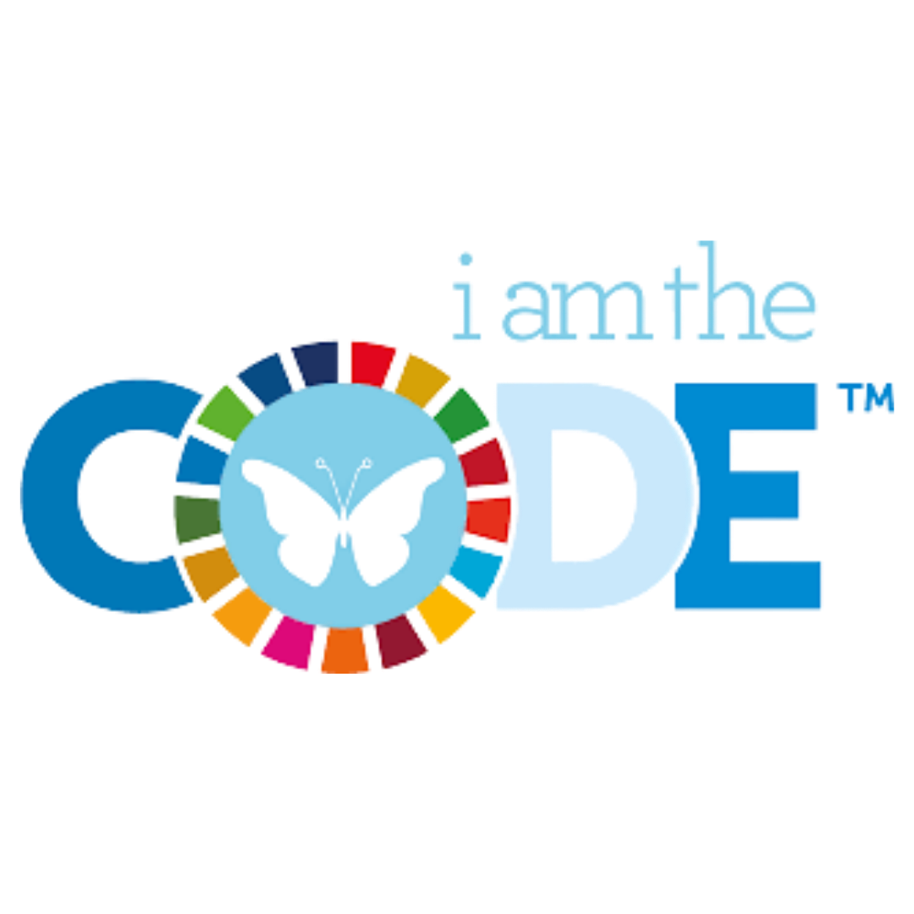
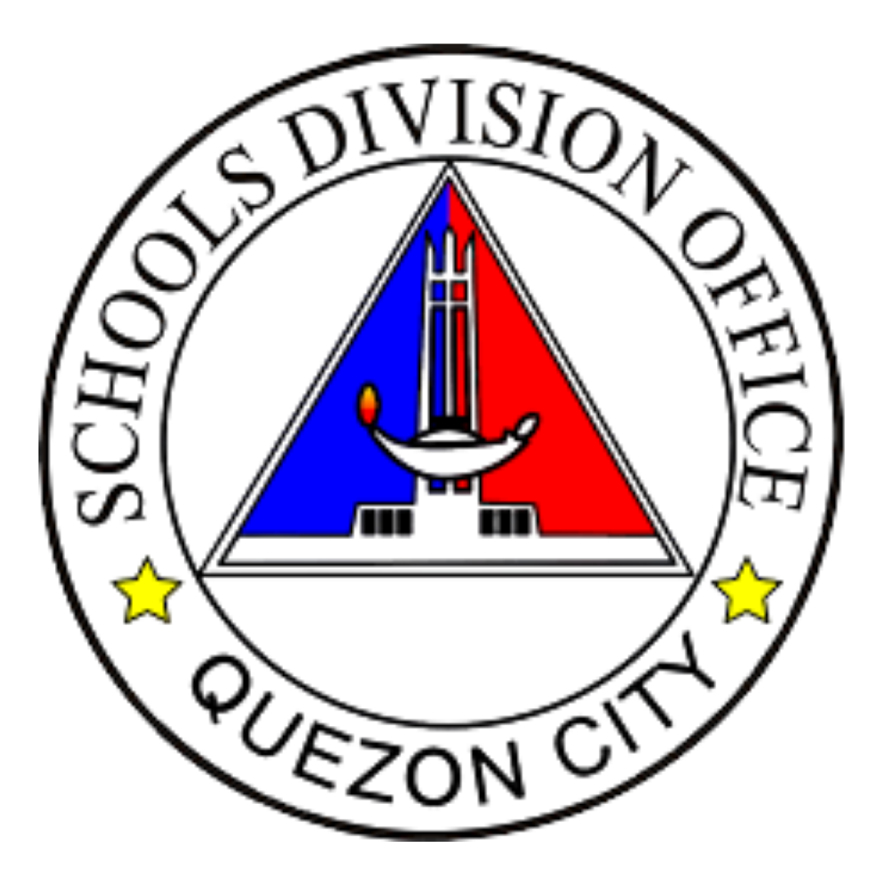
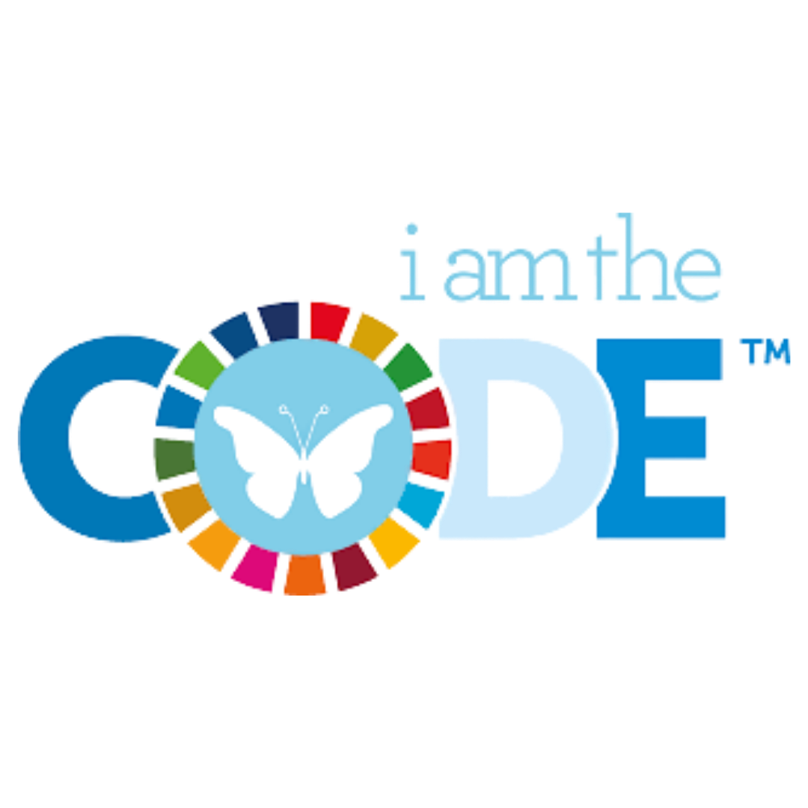

About
Click the card to reveal the answer.
What is iamtheCODE?
Coding Sessions
  Our Journey Video
Meet Our Team
School Head
Ms. Carolyn C. Simon
Head Teacher

Ms. Evelyn B. Tombado
ICT Coordinator

Mr. Reynold Lorens M. Acal
Teacher Facilitator

Ms. Maria Theresa B. Baltazar
Team Leader
Nathalie R. Arcillas
Members
Jonairah D. Comacasar

Alexzandra T. Collante
Jarhed Lei C. Notario
Our SDG Project
SDG 13: Climate Action

Solar Panels
Solar Panels
Quirino High School joined Quezon City’s push for a greener and more sustainable future with the inauguration of its newly installed solar panels led by Mayor Joy Belmonte. This achievement highlights the school’s commitment to renewable energy and reflects strong support from the city government toward sustainability and quality education.


Project ReLeaf
Project ReLeaf
Project ReLeaf is a school-based environmental program that encourages students to take part in climate action through hands-on activities like planting vegetables in the school greenhouse. It helps learners understand the importance of protecting nature and practicing sustainability in daily life.


Waste Segregation
Waste Segregation
Quirino High School promotes climate action through proper waste segregation on campus. By practicing correct disposal of waste, students and staff help reduce pollution and support a cleaner, healthier, and more sustainable school environment.
7 Green Flags of Quirino High School
Quirino High School proudly displays its 7 Green Flags, symbolizing our commitment to environmental sustainability and climate action. Each of them represents a specific achievement or initiative that contributes to a greener and more eco-friendly school community.
ACTIVITIES
Tree Planting at La Mesa Eco Park


Click photo for more information.
Exploring Apugan Cave
 Click photo for more information.
SEMINARS
TURNING THE TIDE: Working Together for a Plastic-Free Philippines

Click photo for more information.
"Dalaw Turo - Ecological Solid Waste Management Act of 2000 and Climate Change" of DENR
Click photo for more information.
CONTESTS


Click photo for more information.
🌿 Interactive Activity 🌎
Our Journey
Quirino High School participated in the iamtheCODE pilot program, a global initiative dedicated to empowering young women through coding, digital literacy, and STEAMD education. As one of the pilot schools, Quirino High School provided its students with the opportunity to gain hands-on experience in coding, technology, and collaborative problem-solving over a 12-week program.
Timeline

Learnings

CHANNEL
1. Welecome to the Program

ASPIRE JOURNEY
2. Learn to Code in HTML

ASPIRE JOURNEY
3. Learn to Code in CSS!

ASPIRE JOURNEY
4. Learn to Code in Javascript!

ASPIRE JOURNEY
5. Learn to Code in HTML, CSS, amd Java Skills!

ASPIRE JOURNEY
6. Learn to Code in Python!

LINK
7. Getting to know the Wellbeing Code

LINK
8. Sustainable Development - SDG's

CHANNEL
9. What is Design Thinking?

CHANNEL
10. Commmunication Skills

CHANNEL
11. Presentation Skills

CHANNEL
12. Project Management
Sample Outputs


Student Testimonials
Here are some inspiring reflections from our learners.
"iamtheCODE motivated me to step out of my comfort zone. Even when coding felt difficult, the program reminded me that mistakes are part of learning. It made me more patient, creative, and determined to improve my skills."
– Melkyla Tariga"This program showed me that I can be part of the digital world, even if I started with little knowledge. I Am The Code empowered me to learn, grow, and believe that my ideas matter. It inspired me to continue exploring technology and use it for good."
– Joseph Ramos"I Am The Code helped me realize that coding is not just for experts or professionals. It showed me that anyone, even beginners like me, can learn how to code and create something meaningful. This program gave me confidence and encouraged me to believe in my own potential."
– Rhizza BañaciaGallery


FAQs
Contact
Quirino High School
Email: hs.quirino@depedqc.ph
Acknowledgment
 





We extend our sincere appreciation to the Department of Education, Her Legacy Project Foundation (HLPF), Software Research (QSR), and the Education Program Specialists (EPS) for their continued support, guidance, and collaboration in making this initiative a success.
We also thank the iamtheCODE Program and Quirino High School for their strong partnership and commitment to empowering learners through technology and innovation. Our heartfelt gratitude is extended to our School Head, Ms. Carolyn C. Simon, and our Head Teacher, Ms. Evelyn B. Tumbado, for their leadership and encouragement throughout this project.
We also extend our gratitude to the QHS YES-O Club for their support and active involvement. Their contributions strengthened our Sustainable Development Goal (SDG) initiatives and our advocacy for environmental awareness and sustainability.
Lastly, we express our appreciation to our Teacher Facilitator, Ms. Maria Theresa B. Baltazar, to our ICT Coordinator, Mr. Reynold Lorens Acal, and to our fellow iamtheCODE students, whose dedication, teamwork, and enthusiasm greatly contributed to the success of this program.